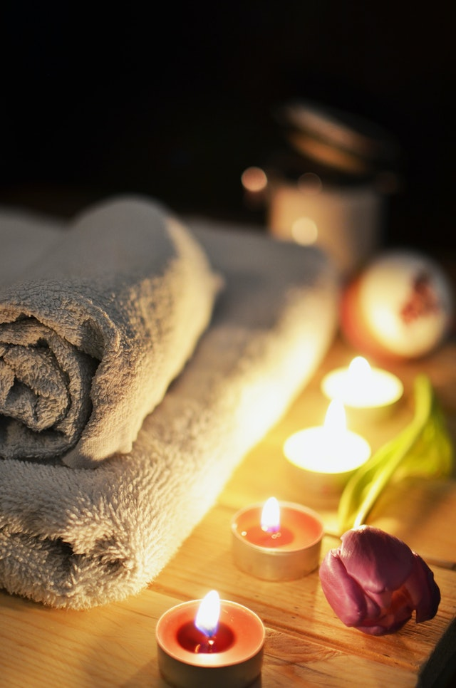

Mesto koje vas čini lepšim

Visoki Sjaj je savršeno mesto za opuštanje, ulepšavanje, zdravo mršavljenje i kompletno sređivanje lica i tela uz zdrav sportski pristup. udimo potpunu relaksaciju Vašeg organizma uz bogatu ponudu klasičnih i terapijskih masaža sa vrlo pristupačnim cenama. Trenutno na akciji su:
Ordinacijsko izbeljivanje nije samo izbeljivanje zuba, već studiozni individualni plan koji pravite sa stručnim licem i postavljate cilj do željenog efekta. To je jedina sigurna metoda koja trajno beli zube i efekat je vidljiv odmah. Zubi se ne oštećuju i nema osetljivosti. Gelovi koje koristimo za izbeljivanje su nemačkog proizvođača i najkvalitniji su na tržištu. Dobijaju se 3 nijanse svetliji zubi samo jednim beljenjem.
Ako je face lifting gde se samo zatezala koža, otišlo odavno u istoriju plastične hirurgije, face lift + SMAS lift se već smatra zastarelom metodom koja ima smisla i razloga da se izvodi kod takozvanog "ćurećeg vrata", novo na polju estetskih operacija zatezanja lica je MACS lift. Bore nestaju, obrazi se podižu, linija donjeg dela obraza se vraća, kao kada ste bili mladi, profil je fantastičan, vrat je zategnut, nema podvaljka, "ćureće kože", umorne "buldog" bore nestaju, koža je zategnuta i mladalačka...jednom rečju sve je fantastično posle operacije MASC lift lica i vrata.
Iako su hemijski pilinzi već decenijama svrstani u osnovne tretmane lica još uvek vlada bojazan i nepoznanica od njih. Postoji čitava paleta kiselina koje se koriste u kozmetologiji za tretmane hemijskog pilinga. Serija dobro odrađenih pilinga može rešiti dugogodišnje probleme sa hiperpigmentacijama (flekama), aknama, ožiljcima, a koriste se i u svrhu anti-age tretmana (ublažavanje bora i vraćanje vitalnosti kože). Takođe se može uraditi pojedinačan tretman kao uvod u kompleksnije tretmane lica. Svrha svih hemijskih pilinga je u osnovi skidanje površinskog sloja kože što omogućava bolju hidrataciju i apsorpciju aktivnih sastojaka, takođe uspostavljanje normalnog pH kože. Skidanjem površinskog sloja koža se regeneriše, vraća joj se tonus, ten se ujednačava, a nepravilnosti nestaju.
Kada kažete da su kod vas prisutni “bolovi u vratu”, time govorite ljudima o tome koliko je vaše stanje lose. U svetu i kod nas oko 15% osoba prima neku terapiju za bolove u vratu, Bol se obično javlja prilikom prostih aktivnosti kao što su podizanje ramena do takvog nivoa da ruke mogu lagodno raditi na tastaturi. Ili pomeranje ramena iznad radne površine. Postura tela je značajan faktor koji može uticati na nastanak bolova u vratu. Uzroci bola mogu biti i stanja kao što je artritis, oštećenje mekih tkiva, uklještenje nerva, istegnut mišić ili degenerativne bolesti. Bol bilo da je hronična ili traje samo kratak period vremena, bol u vratu može se prevenirati ili odstraniti masažom. Redovna terapeutska masaža pomaže da se čitavo telo oslobodi bola, a to je svakako cilj terapeuta koji rade usalonu Visoki Sjaj za profesionalnu masažu. Kada patite od bolova u vratu, masaža se fokusira prvo na vaša ramena a zatim na gornji deo leđa i vrat.
Atlas, prvi vratni pršljen, je najmanji, najtanji, najlakši i NAJVAŽNIJI vratni pršljen. Čak i minimalno izmeštanje prvog vratnog pršljena (1-4mm) može biti uzrok mnogim zdravstvenim tegobama: vrtoglavica, glavobolja, napetost u mišićima vrata i ramena, nesanica, nestabilnost pri hodu, poremećaj vida i sluha, zujanje u ušima, hroničan umor, pad koncentracije i pamćenja, bezvoljnost i loše raspoloženje… Zbog poremećene veze od mozga ka perifernim delovima tela čovek živi ne koristeći svoj puni potencijal. Dugotrajan pritisak na kičmenu moždinu, nerve, krvne sudove i limfne kanale uzrok je mnogih fizičkih i psihičkih problema i poteškoća. Stručnjaci se slažu da je Atlas, ne samo najvažniji, već i jedini pršljen koji treba korigovati, jer se na taj način i ostali pršljenovi dovode u red tzv. domino efekat.
Maderoterapija – masaža a pre će biti tretman oklagijama (m+ž) u trajanju od 30 min ne služi samo u borbi protiv celulita već se pokazala kao veoma dobar tretman za oblikovanje tela kod oba pola, kod muškaraca sportista je pokazala veoma dobar efekat.
Trajna šminka je tehnika ubacivanja pigmentne boje biljno-mineralnog porekla u plitke slojeve kože, iscrtavanjem linija i posebnim načinom senčenja. Kod usana se radi izvlačenje kontura linija usana, ali i popunjavanje cele površine usana (po želji klijenta), čime se može postići izvesna korekcija usana i izražajnosti. Spektar boja će Vam pomoći da izaberete boju koja najviše odgovara Vašem licu i boji kože. Postojanost boja je individualna i zavisi od metabolizma i starosti klijenta. Traje od 2,5 godine (za svetle nijanse) do 5 godina (za tamnije nijanse).
Masaza tela je jedna od najpoznatijih metoda opuštanja i lečenja, obuhvata niz raznovrsnih tehnika,a bazira se na lupkanju,pritiskanju ,istezanju i gladjenju mišića i vezivnog tkiva sa različitim intenzitetom.Prikladna je za sve uzraste,a kako masirati možete naučiti i sami.Drevni lekari masažu su koristili u prevenciji i terapiji raznih tegoba kao što su povrede,astma, loša probava, pa čak i neplodnost.Ukoliko se redovno primenjuje, masaza tela deluje blagotvorno na kompletan organizam i pritom podstiče dobro raspoloženje.Najveći broj bolesti uzrokovan je stresom, a masaža predstavlja jedno od najboljih sredstava u borbi protiv napetosti i nervoze čiji je čest uzročnik hronični umor. Pomaže i u slučaju nesanice, naročito ako obuhvata celo telo,mada se dobar efekat postiže i ukoliko se proimeni samo masaza ledja,masaža stopala ili masaža vrata.
Laserska epilacija je medicinska metoda koja bezbedno uklanja neželjene dlačice sa lica i tela. Neškodljiva je i minimalno invanzivna i mogu je koristiti i žene i muškarci. Pacijent ne sme da depilira dlačice mesec dana pre tretmana, može da ih uklanja brijačem ili depil kremom, dlake se ne smeju izbeljivati i čupati pincetom.Pacijent na tretman dolazi obrijan (uklonio je dlačice par sati pred tretman ili najviše jedan dan pred tretman) Zone: Lice, Potkolenica (jedna), Natkolenica (jedna), Prepone, Perianal, Stomak, Grudi, Pazusi, Ruka (jedna), Ramena, Leđa – gornja, Leđa – donja, Gluteusi. Mini zone: Uši, Nausnice, Brada, Zulufi, Jagodice, Areole, Trbušna linija, Šake, Stopala, Vrat – prednji, Vrat – zadnjiRezultat možete videti nakon prvog tretmana laserske epilacije,i nakon svakog sledećeg tretmana. Na kraju ostaje svilenkasta i glatka koža bez dlačica.
Pedikir i manikir savršen spoj lepog i korisnog u svetu lepote koji Vam nudimo jedinstvene SPA tretmane, uz upotrebu najkvalitetnije kozmetike. U prijatnom ambijentu našeg salona dočekaće Vas stručno i profesionalno osoblje koje poseduje visoko obrazovanje stečeno u inostranstvu (Holandija, London, Majami) i u Srbiji, kao i dugogodišnje iskustvo koje su doneli sa luksuznih kruzera.